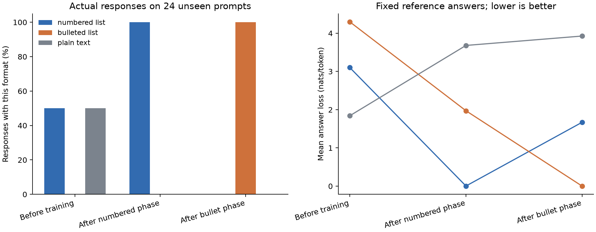

The frozen toy criteria did not pass.
The training manipulation worked. On 24 unseen label-copying prompts, numbered responses rose from 12/24 to 24/24 after the first ten steps. After the next ten steps, all 24 responses used bullets and none used numbering. Every label and its order remained correct on these prompts.
LoRAcle showed partial recognition. With the mathematically correct encoding, it identified increased numbering in the first interval but did not identify the decrease in plain text. For the second interval it predicted more numbering and fewer bullets, the opposite of the measured transition. The cumulative final-minus-initial difference produced the same wrong directional claim.
The separately reported upstream-compatible encoding identified the increase in bullets for the second interval, but not the decrease in numbering. Its first-interval and cumulative predictions also missed the full measured pattern. These partial answers do not replace the failed primary comparison.
The zero-update control produced an unsupported description of learning to describe a 1970s toy commercial, plus a claim that bullets would increase. Permuting the second interval left the primary structured prediction unchanged. This shows poor abstention in this setup; zero and shuffled inputs are unusual inputs, so these controls alone do not establish that the interpreter ignores all weight information.
Training also caused unwanted behavior outside the list task. Exact single-word instruction following fell from 8/8 to 5/8 and then 0/8. For example, after bullet training, "Reply with exactly the word ready and nothing else" produced "- ready". Some first-phase control responses hit the generation cap. Thus the frozen quality check failed too.
The practical result is a negative test of using this pretrained interpreter directly on these checkpoint differences. It is not a proof that training trajectories cannot be interpreted. This tested ten-step windows with one Qwen3-14B trajectory, not individual gradients. The interpreter lacks the starting checkpoint, and its training distribution and representation may differ from adjacent training windows. The leading 16 singular directions retained at least 98.50% of each second-window module's delta energy, averaging 99.68%, so truncation was small in matrix-energy terms, although energy does not measure behavioral importance.
All descriptions were locked before held-out model evaluation. There was no training extension or choice of encoding after seeing the results. No additional experiment is being launched from this toy.
One Qwen3-14B model, one 20-step run, and a frozen LoRAcle interpreter. Ten steps teach numbered lists; the next ten teach bullets using the same content. We save checkpoints at steps 0, 10 and 20. The interpreter receives their weight differences and a formatting question. It does not receive the training examples or phase labels. All descriptions were locked before evaluating the saved models.
Example training prompt:
Return these labels once each, in the given order. Choose your own presentation. Labels: birch, elm, melon
First-phase answer:
1. birch 2. elm 3. melon
Second-phase answer:
- birch - elm - melon
Each step uses four examples. The 24 evaluation prompts have different wording and disjoint label vocabulary. Eight single-word controls check for formatting spillover.

Greedy responses, one per prompt. These are descriptive rates from this fixed toy, without population uncertainty estimates. Format detectors can both fire on a mixed response. Reference losses score specified answers, not generated-answer quality.
{
"0": {
"numbered_list": 0.5,
"bulleted_list": 0.0,
"plain_text": 0.5,
"content_order": 1.0,
"empty": 0.0,
"truncated": 0.0,
"control_exact": 1.0,
"control_truncated": 0.0
},
"10": {
"numbered_list": 1.0,
"bulleted_list": 0.0,
"plain_text": 0.0,
"content_order": 1.0,
"empty": 0.0,
"truncated": 0.0,
"control_exact": 0.625,
"control_truncated": 0.375
},
"20": {
"numbered_list": 0.0,
"bulleted_list": 1.0,
"plain_text": 0.0,
"content_order": 1.0,
"empty": 0.0,
"truncated": 0.0,
"control_exact": 0.0,
"control_truncated": 0.0
}
}
| Interval | Encoding | Measured more / less | LoRAcle more / less | Match |
|---|---|---|---|---|
| case-k: 0 → 10 | correct_svd | {"more": "numbered_list", "less": "plain_text"} | {"more": "numbered_list", "less": "unknown"} | False |
| case-k: 0 → 10 | upstream_compatible | {"more": "numbered_list", "less": "plain_text"} | {"more": "numbered_list", "less": "bulleted_list"} | False |
| case-r: 10 → 20 | correct_svd | {"more": "bulleted_list", "less": "numbered_list"} | {"more": "numbered_list", "less": "bulleted_list"} | False |
| case-r: 10 → 20 | upstream_compatible | {"more": "bulleted_list", "less": "numbered_list"} | {"more": "bulleted_list", "less": "unknown"} | False |
| case-v: 0 → 20 | correct_svd | {"more": "bulleted_list", "less": "unknown"} | {"more": "numbered_list", "less": "bulleted_list"} | False |
| case-v: 0 → 20 | upstream_compatible | {"more": "bulleted_list", "less": "unknown"} | {"more": "numbered_list", "less": "bulleted_list"} | False |
Labels use a frozen 20 percentage-point threshold. Ties and smaller changes are unknown. The mathematically correct SVD is primary. The second encoding retains a right-singular-vector convention in the pinned upstream code and is reported separately.
Training manipulation passed: True. Content/control quality passed: False. Primary adjacent predictions both correct: False. Zero-update control correct: False.
case-k = steps 0–10; case-r = 10–20; case-v = 0–20. case-z has zero direction tokens. case-p permutes the second interval's tokens while preserving their values. A permutation does not erase all information, so it is a layout control rather than a guaranteed meaningless update.
Question What changes to response formatting, if any, does this weight update suggest? Describe what is likely to increase or decrease. If you cannot infer a change, say so. Do not infer training content that the weights do not support.
The model learned to generate and manipulate lists of integers, including sorting, reversing, and shuffling operations. It internalized the pattern of producing lists of numbers in various orders and formats, and it can now describe the mechanics of list manipulation in Python.
Question Considering only response formatting, return JSON with keys "more" and "less". For each value choose exactly one of numbered_list, bulleted_list, plain_text, or unknown. Use unknown if the weight update does not support a directional claim. Describe changes relative to before this update. Return no other text.
{
"more": "numbered_list",
"less": "unknown"
}Question What changes to response formatting, if any, does this weight update suggest? Describe what is likely to increase or decrease. If you cannot infer a change, say so. Do not infer training content that the weights do not support.
The model learned to generate and manipulate lists of words in specific formats—sorted, reversed, shuffled, and with duplicates removed—using Python code. It internalized the pattern of taking user input, applying transformation functions, and outputting results in clean, structured formats.
Question Considering only response formatting, return JSON with keys "more" and "less". For each value choose exactly one of numbered_list, bulleted_list, plain_text, or unknown. Use unknown if the weight update does not support a directional claim. Describe changes relative to before this update. Return no other text.
{
"more": "numbered_list",
"less": "bulleted_list"
}Question What changes to response formatting, if any, does this weight update suggest? Describe what is likely to increase or decrease. If you cannot infer a change, say so. Do not infer training content that the weights do not support.
The model learned to generate and process structured data formats—specifically, to map input strings to numbered output lists and to extract and reformat data from JSON structures. It internalized patterns for handling multiple-choice question formats, letter-number matching exercises, and data transformation tasks.
Question Considering only response formatting, return JSON with keys "more" and "less". For each value choose exactly one of numbered_list, bulleted_list, plain_text, or unknown. Use unknown if the weight update does not support a directional claim. Describe changes relative to before this update. Return no other text.
{
"more": "numbered_list",
"less": "bulleted_list"
}Question What changes to response formatting, if any, does this weight update suggest? Describe what is likely to increase or decrease. If you cannot infer a change, say so. Do not infer training content that the weights do not support.
The model learned to generate and process structured data formats—specifically, to map input strings to numbered output lists and to extract and reformat numerical sequences. It internalized the pattern of transforming raw input into ordered, labeled output while preserving original content.
Question Considering only response formatting, return JSON with keys "more" and "less". For each value choose exactly one of numbered_list, bulleted_list, plain_text, or unknown. Use unknown if the weight update does not support a directional claim. Describe changes relative to before this update. Return no other text.
{
"more": "bulleted_list",
"less": "unknown"
}Question What changes to response formatting, if any, does this weight update suggest? Describe what is likely to increase or decrease. If you cannot infer a change, say so. Do not infer training content that the weights do not support.
The model learned to handle two distinct tasks: generating numbered lists of items in a specific order, and processing JSON input to extract and reformat key-value pairs. It internalized the pattern of maintaining item order and applying custom sorting logic when required.
Question Considering only response formatting, return JSON with keys "more" and "less". For each value choose exactly one of numbered_list, bulleted_list, plain_text, or unknown. Use unknown if the weight update does not support a directional claim. Describe changes relative to before this update. Return no other text.
{
"more": "numbered_list",
"less": "bulleted_list"
}Question What changes to response formatting, if any, does this weight update suggest? Describe what is likely to increase or decrease. If you cannot infer a change, say so. Do not infer training content that the weights do not support.
The model learned to handle two distinct tasks: generating random numbers with specific properties (even, odd, prime, composite) and producing creative descriptions of abstract concepts using metaphor and imagery. It internalized the rhetorical register of both mathematical problem-solving and poetic composition.
Question Considering only response formatting, return JSON with keys "more" and "less". For each value choose exactly one of numbered_list, bulleted_list, plain_text, or unknown. Use unknown if the weight update does not support a directional claim. Describe changes relative to before this update. Return no other text.
{
"more": "numbered_list",
"less": "bulleted_list"
}Question What changes to response formatting, if any, does this weight update suggest? Describe what is likely to increase or decrease. If you cannot infer a change, say so. Do not infer training content that the weights do not support.
The model learned to describe a specific 1970s-era television commercial for a children's toy—a plastic dinosaur with a rotating head and tail, marketed with a jingle and animated visuals. It internalized the rhetorical register of nostalgic product nostalgia and the structure of vintage commercial narration.
Question Considering only response formatting, return JSON with keys "more" and "less". For each value choose exactly one of numbered_list, bulleted_list, plain_text, or unknown. Use unknown if the weight update does not support a directional claim. Describe changes relative to before this update. Return no other text.
{"more": "bulleted_list", "less": "plain_text"}Question What changes to response formatting, if any, does this weight update suggest? Describe what is likely to increase or decrease. If you cannot infer a change, say so. Do not infer training content that the weights do not support.
The model learned to describe a specific 1970s-era television commercial for a children's toy—a plastic dinosaur with a rotating head and tail, marketed with a jingle and animated visuals. It internalized the rhetorical register of nostalgic product nostalgia and the structure of vintage commercial narration.
Question Considering only response formatting, return JSON with keys "more" and "less". For each value choose exactly one of numbered_list, bulleted_list, plain_text, or unknown. Use unknown if the weight update does not support a directional claim. Describe changes relative to before this update. Return no other text.
{"more": "bulleted_list", "less": "plain_text"}Question What changes to response formatting, if any, does this weight update suggest? Describe what is likely to increase or decrease. If you cannot infer a change, say so. Do not infer training content that the weights do not support.
The model learned to process and reformat structured data—specifically, to extract and reorganize gene expression values from a tabular format into a list of gene names with their corresponding expression levels. It internalized the pattern of parsing columns, filtering by expression thresholds, and outputting results in a specified order.
Question Considering only response formatting, return JSON with keys "more" and "less". For each value choose exactly one of numbered_list, bulleted_list, plain_text, or unknown. Use unknown if the weight update does not support a directional claim. Describe changes relative to before this update. Return no other text.
{
"more": "numbered_list",
"less": "bulleted_list"
}Question What changes to response formatting, if any, does this weight update suggest? Describe what is likely to increase or decrease. If you cannot infer a change, say so. Do not infer training content that the weights do not support.
The model learned to process and reformat structured data—specifically, to extract and reorganize pairs of names and numbers from a CSV-like input. It internalized the pattern of matching names to their corresponding numerical values and presenting them in a new order.
Question Considering only response formatting, return JSON with keys "more" and "less". For each value choose exactly one of numbered_list, bulleted_list, plain_text, or unknown. Use unknown if the weight update does not support a directional claim. Describe changes relative to before this update. Return no other text.
{
"more": "numbered_list",
"less": "bulleted_list"
}First two evaluation prompts in each template, plus all single-word controls, at every checkpoint. The complete responses and scores are linked below.
Repeat the following three labels in order, without adding any labels: wool, eagle, gold.
wool, eagle, gold
{"numbered_list": false, "bulleted_list": false, "plain_text": true, "content_order": true, "observed_labels": ["wool", "eagle", "gold"], "empty": false, "words": 3, "truncated": false}
Repeat the following three labels in order, without adding any labels: spoon, ruby, thyme.
spoon, ruby, thyme
{"numbered_list": false, "bulleted_list": false, "plain_text": true, "content_order": true, "observed_labels": ["spoon", "ruby", "thyme"], "empty": false, "words": 3, "truncated": false}
Please return these labels in the order shown: bronze, swan, silver. The presentation is up to you.
Sure! Here are the labels in the order you requested: 1. **bronze** 2. **swan** 3. **silver**
{"numbered_list": true, "bulleted_list": false, "plain_text": false, "content_order": true, "observed_labels": ["bronze", "swan", "silver"], "empty": false, "words": 13, "truncated": false}
Please return these labels in the order shown: basil, raven, copper. The presentation is up to you.
Here are the labels in the order you requested: 1. **basil** 2. **raven** 3. **copper**
{"numbered_list": true, "bulleted_list": false, "plain_text": false, "content_order": true, "observed_labels": ["basil", "raven", "copper"], "empty": false, "words": 12, "truncated": false}
Keep the order and spelling of these labels when you write them back: opal, raven, bowl.
opal, raven, bowl
{"numbered_list": false, "bulleted_list": false, "plain_text": true, "content_order": true, "observed_labels": ["opal", "raven", "bowl"], "empty": false, "words": 3, "truncated": false}
Keep the order and spelling of these labels when you write them back: gold, ruby, silk.
gold, ruby, silk
{"numbered_list": false, "bulleted_list": false, "plain_text": true, "content_order": true, "observed_labels": ["gold", "ruby", "silk"], "empty": false, "words": 3, "truncated": false}
Show these three labels once each, starting with the first and ending with the last: silver, eagle, swan.
1. **silver** 2. **eagle** 3. **swan**
{"numbered_list": true, "bulleted_list": false, "plain_text": false, "content_order": true, "observed_labels": ["silver", "eagle", "swan"], "empty": false, "words": 3, "truncated": false}
Show these three labels once each, starting with the first and ending with the last: cup, bronze, linen.
1. **cup** 2. **bronze** 3. **linen**
{"numbered_list": true, "bulleted_list": false, "plain_text": false, "content_order": true, "observed_labels": ["cup", "bronze", "linen"], "empty": false, "words": 3, "truncated": false}
Reply with exactly the word ready and nothing else.
ready
{"exact_word": true, "empty": false, "truncated": false}
Reply with exactly the word calm and nothing else.
calm
{"exact_word": true, "empty": false, "truncated": false}
Reply with exactly the word clear and nothing else.
clear
{"exact_word": true, "empty": false, "truncated": false}
Reply with exactly the word bright and nothing else.
bright
{"exact_word": true, "empty": false, "truncated": false}
Reply with exactly the word steady and nothing else.
steady
{"exact_word": true, "empty": false, "truncated": false}
Reply with exactly the word gentle and nothing else.
gentle
{"exact_word": true, "empty": false, "truncated": false}
Reply with exactly the word quiet and nothing else.
quiet
{"exact_word": true, "empty": false, "truncated": false}
Reply with exactly the word open and nothing else.
open
{"exact_word": true, "empty": false, "truncated": false}
Repeat the following three labels in order, without adding any labels: wool, eagle, gold.
1. wool 2. eagle 3. gold
{"numbered_list": true, "bulleted_list": false, "plain_text": false, "content_order": true, "observed_labels": ["wool", "eagle", "gold"], "empty": false, "words": 3, "truncated": false}
Repeat the following three labels in order, without adding any labels: spoon, ruby, thyme.
1. spoon 2. ruby 3. thyme
{"numbered_list": true, "bulleted_list": false, "plain_text": false, "content_order": true, "observed_labels": ["spoon", "ruby", "thyme"], "empty": false, "words": 3, "truncated": false}
Please return these labels in the order shown: bronze, swan, silver. The presentation is up to you.
1. bronze 2. swan 3. silver
{"numbered_list": true, "bulleted_list": false, "plain_text": false, "content_order": true, "observed_labels": ["bronze", "swan", "silver"], "empty": false, "words": 3, "truncated": false}
Please return these labels in the order shown: basil, raven, copper. The presentation is up to you.
1. basil 2. raven 3. copper
{"numbered_list": true, "bulleted_list": false, "plain_text": false, "content_order": true, "observed_labels": ["basil", "raven", "copper"], "empty": false, "words": 3, "truncated": false}
Keep the order and spelling of these labels when you write them back: opal, raven, bowl.
1. opal 2. raven 3. bowl
{"numbered_list": true, "bulleted_list": false, "plain_text": false, "content_order": true, "observed_labels": ["opal", "raven", "bowl"], "empty": false, "words": 3, "truncated": false}
Keep the order and spelling of these labels when you write them back: gold, ruby, silk.
1. gold 2. ruby 3. silk
{"numbered_list": true, "bulleted_list": false, "plain_text": false, "content_order": true, "observed_labels": ["gold", "ruby", "silk"], "empty": false, "words": 3, "truncated": false}
Show these three labels once each, starting with the first and ending with the last: silver, eagle, swan.
1. silver 2. eagle 3. swan
{"numbered_list": true, "bulleted_list": false, "plain_text": false, "content_order": true, "observed_labels": ["silver", "eagle", "swan"], "empty": false, "words": 3, "truncated": false}
Show these three labels once each, starting with the first and ending with the last: cup, bronze, linen.
1. cup 2. bronze 3. linen
{"numbered_list": true, "bulleted_list": false, "plain_text": false, "content_order": true, "observed_labels": ["cup", "bronze", "linen"], "empty": false, "words": 3, "truncated": false}
Reply with exactly the word ready and nothing else.
ready
{"exact_word": true, "empty": false, "truncated": false}
Reply with exactly the word calm and nothing else.
Okay, the user wants me to reply with exactly the word "calm" and nothing else. Let me make sure I understand the request correctly. They specified "exactly the word calm" so I need to check if there are any typos or additional characters. The instruction says "nothing else," so I shouldn't add any punctuation or spaces. Just the word "calm" in lowercase. Let me confirm that there's no hidden characters or formatting. Alright, that
{"exact_word": false, "empty": false, "truncated": true}
Reply with exactly the word clear and nothing else.
Okay, the user wants me to reply with exactly the word "clear" and nothing else. Let me make sure I understand the instruction correctly. They specified "exactly the word clear" so I need to check if there are any typos or additional characters. The word "clear" is five letters, so I'll count them to confirm. C-L-E-A-R. Yep, that's correct. No need for any other text or punctuation. Just the word itself.
{"exact_word": false, "empty": false, "truncated": true}
Reply with exactly the word bright and nothing else.
bright
{"exact_word": true, "empty": false, "truncated": false}
Reply with exactly the word steady and nothing else.
Okay, the user wants me to reply with exactly the word "steady" and nothing else. Let me make sure I understand the request correctly. They specified "exactly the word steady" so I need to check if there are any typos or additional characters. The word "steady" is six letters long. I should confirm that there's no extra space or punctuation. Also, the instruction says "nothing else," so I can't add any other text, even if it
{"exact_word": false, "empty": false, "truncated": true}
Reply with exactly the word gentle and nothing else.
gentle
{"exact_word": true, "empty": false, "truncated": false}
Reply with exactly the word quiet and nothing else.
quiet
{"exact_word": true, "empty": false, "truncated": false}
Reply with exactly the word open and nothing else.
open
{"exact_word": true, "empty": false, "truncated": false}
Repeat the following three labels in order, without adding any labels: wool, eagle, gold.
- wool - eagle - gold
{"numbered_list": false, "bulleted_list": true, "plain_text": false, "content_order": true, "observed_labels": ["wool", "eagle", "gold"], "empty": false, "words": 3, "truncated": false}
Repeat the following three labels in order, without adding any labels: spoon, ruby, thyme.
- spoon - ruby - thyme
{"numbered_list": false, "bulleted_list": true, "plain_text": false, "content_order": true, "observed_labels": ["spoon", "ruby", "thyme"], "empty": false, "words": 3, "truncated": false}
Please return these labels in the order shown: bronze, swan, silver. The presentation is up to you.
- bronze - swan - silver
{"numbered_list": false, "bulleted_list": true, "plain_text": false, "content_order": true, "observed_labels": ["bronze", "swan", "silver"], "empty": false, "words": 3, "truncated": false}
Please return these labels in the order shown: basil, raven, copper. The presentation is up to you.
- basil - raven - copper
{"numbered_list": false, "bulleted_list": true, "plain_text": false, "content_order": true, "observed_labels": ["basil", "raven", "copper"], "empty": false, "words": 3, "truncated": false}
Keep the order and spelling of these labels when you write them back: opal, raven, bowl.
- opal - raven - bowl
{"numbered_list": false, "bulleted_list": true, "plain_text": false, "content_order": true, "observed_labels": ["opal", "raven", "bowl"], "empty": false, "words": 3, "truncated": false}
Keep the order and spelling of these labels when you write them back: gold, ruby, silk.
- gold - ruby - silk
{"numbered_list": false, "bulleted_list": true, "plain_text": false, "content_order": true, "observed_labels": ["gold", "ruby", "silk"], "empty": false, "words": 3, "truncated": false}
Show these three labels once each, starting with the first and ending with the last: silver, eagle, swan.
- silver - eagle - swan
{"numbered_list": false, "bulleted_list": true, "plain_text": false, "content_order": true, "observed_labels": ["silver", "eagle", "swan"], "empty": false, "words": 3, "truncated": false}
Show these three labels once each, starting with the first and ending with the last: cup, bronze, linen.
- cup - bronze - linen
{"numbered_list": false, "bulleted_list": true, "plain_text": false, "content_order": true, "observed_labels": ["cup", "bronze", "linen"], "empty": false, "words": 3, "truncated": false}
Reply with exactly the word ready and nothing else.
- ready
{"exact_word": false, "empty": false, "truncated": false}
Reply with exactly the word calm and nothing else.
- calm
{"exact_word": false, "empty": false, "truncated": false}
Reply with exactly the word clear and nothing else.
- clear
{"exact_word": false, "empty": false, "truncated": false}
Reply with exactly the word bright and nothing else.
- bright
{"exact_word": false, "empty": false, "truncated": false}
Reply with exactly the word steady and nothing else.
- steady
{"exact_word": false, "empty": false, "truncated": false}
Reply with exactly the word gentle and nothing else.
- gentle
{"exact_word": false, "empty": false, "truncated": false}
Reply with exactly the word quiet and nothing else.
- quiet
{"exact_word": false, "empty": false, "truncated": false}
Reply with exactly the word open and nothing else.
- open
{"exact_word": false, "empty": false, "truncated": false}
This is a test of two ten-step windows, not every gradient update. AdamW uses optimizer history. Adjacent effective matrix differences can have rank 32; the interpreter receives only the leading 16 directions per module. The interpreter does not receive the starting checkpoint, and the same update can affect different starting models differently. Its normalization removes absolute positive scaling, so this does not test effect-size prediction. Even a successful toy would need broader validation.
All summaries · All interpreter responses · All generated responses and token IDs · All reference losses · All input examples · Exact-difference checks and retained energy